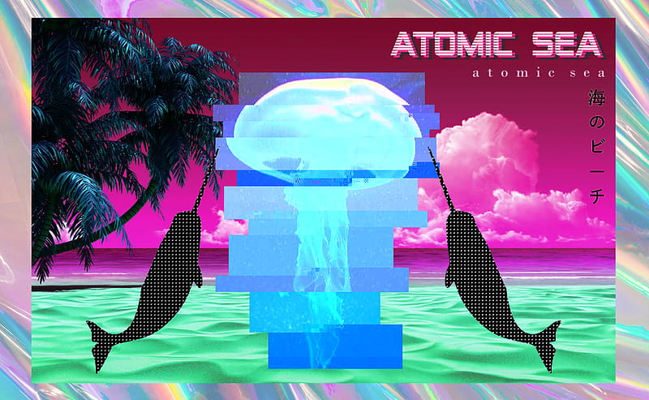

Vaporwave is a genre of electronic music that emerged in the early 2010s. It is characterized by its nostalgic and surreal sound, often utilizing samples from 80s and 90s music, commercials, and elevator music. The aesthetic associated with vaporwave is heavily influenced by internet culture, glitch art, and retro-futurism. Vaporwave originated as an ironic variant of chillwave, evolving from hypnagogic pop as well as similar retro-revivalist and post-Internet motifs that had become fashionable in underground digital music and art scenes of the era, such as Tumblr's seapunk.
The genre gained popularity on internet forums and social media platforms. Vaporwave art often features dreamlike and surreal visuals, with a distinctive color palette and imagery reminiscent of old technology and consumerism.
If you want to explore more about Vaporwave, you can visit the official Vaporwave Website.